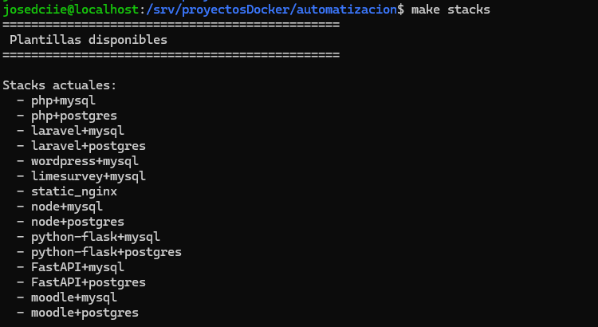
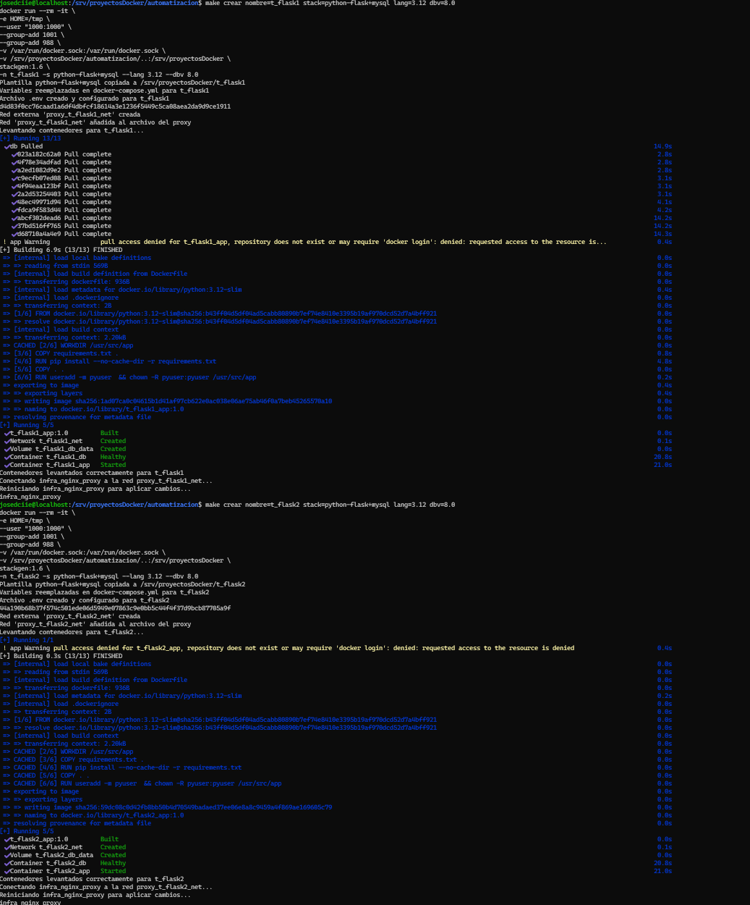
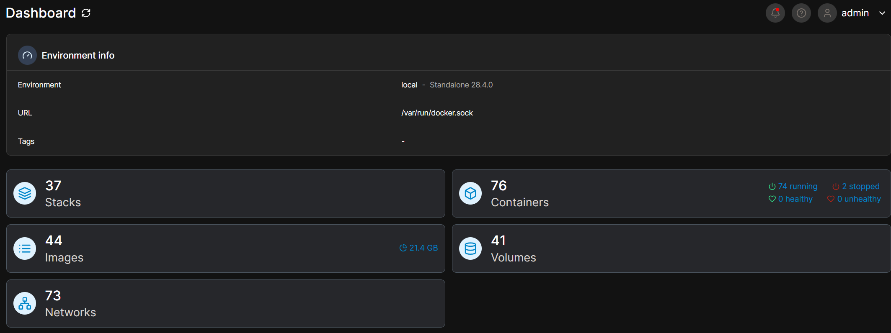
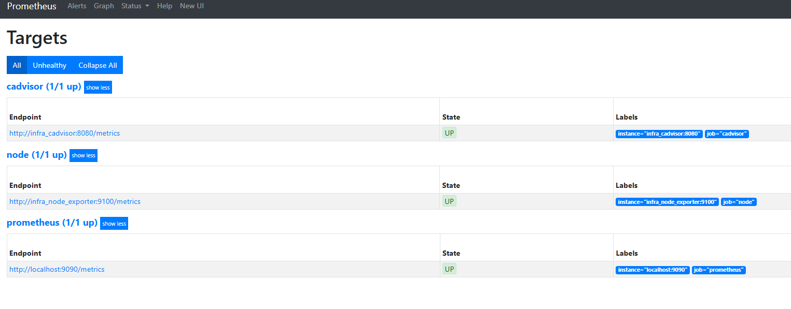
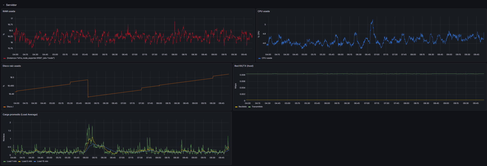
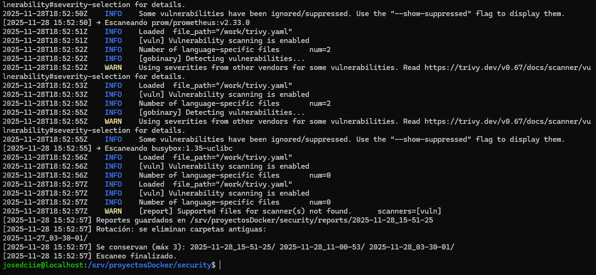

Situación
Problema
Preparar servicios Docker manualmente repite tareas como organizar archivos, seleccionar variables, conectar redes y revisar el estado de cada componente.
Caso de práctica profesional
Laboratorio de infraestructura para ordenar el despliegue de servicios Docker, observar su operación y revisar imágenes antes de reutilizarlas en nuevas pruebas.
Situación
Preparar servicios Docker manualmente repite tareas como organizar archivos, seleccionar variables, conectar redes y revisar el estado de cada componente.
Propuesta
Reúne plantillas reutilizables, módulos de operación y controles básicos para hacer el flujo de laboratorio más consistente y fácil de revisar.
Alcance real
Laboratorio funcional validado con Docker Compose. No se presenta como una plataforma productiva terminada ni como un servicio expuesto a Internet.
Diseño del laboratorio
La preparación del entorno conduce a su operación, observabilidad y revisión técnica. Cada componente cumple una función dentro de esa secuencia.
Opciones de stack y versiones
Archivos, variables y red
Varios stacks levantados
Portainer y proxy
Prometheus y Grafana
Trivy para imágenes
Tecnologías aplicadas
Recorrido de la práctica
El caso se lee como una secuencia: primero se generan stacks desde plantillas, luego se prueban varias combinaciones, después se revisa la operación visualmente y finalmente se valida monitoreo y análisis de imágenes.
Crear el entorno
Primero se consulta la combinación requerida. Luego ejecuté make crear con nombre, stack y versiones: el generador copia la plantilla, crea el .env, reemplaza variables, crea una red externa, registra esa red en el proxy y levanta los contenedores con Docker Compose.


Probar varias plantillas
La validación no se quedó en una plantilla aislada. Durante la práctica se generaron distintos stacks para comprobar que el flujo funcionara con varias combinaciones de aplicación, base de datos y servicios auxiliares. Esa batería de pruebas explica por qué, más adelante, Portainer muestra varios stacks y decenas de contenedores: son entornos levantados para revisar comportamiento, redes, volúmenes y estado de los servicios.
Comprobar el despliegue
Después de levantar los entornos, Portainer se usó como una consola visual para inspeccionar lo que ya estaba corriendo: stacks, contenedores, imágenes, volúmenes y redes. No es el mecanismo que crea el laboratorio, sino una ayuda para revisar rápidamente estado, distribución y recursos cuando hay varias pruebas activas.

Monitorear el sistema
Con los entornos ya desplegados, configuré Prometheus para comprobar que los componentes de monitoreo estuvieran en estado UP. Con esa base, Grafana permitió revisar RAM, CPU, disco, red y carga del host durante las pruebas, en vez de mostrar solo un dashboard suelto sin contexto.


Revisar antes de reutilizar
Agregué un módulo con Trivy para revisar vulnerabilidades y conservar reportes locales rotados. Así, el laboratorio no termina al levantar un contenedor: deja una señal técnica para evaluar si una imagen conviene reutilizarse en futuras pruebas.

Aprendizajes
Separar la generación de entornos de su operación hace más fácil repetir y revisar las pruebas.
Validar los targets antes de mirar dashboards evita interpretar métricas incompletas.
El monitoreo y el análisis de imágenes aportan evidencia útil para tomar decisiones técnicas.